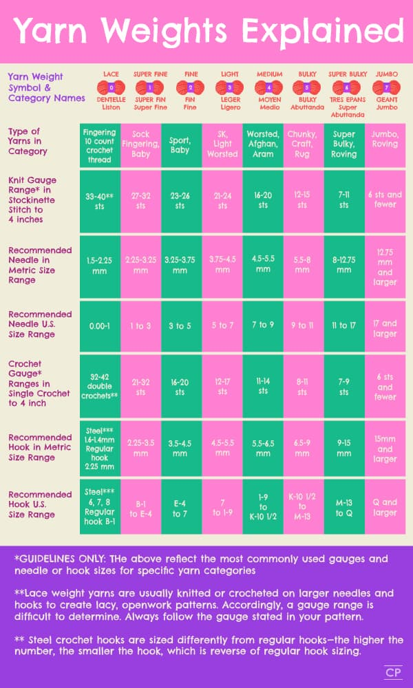
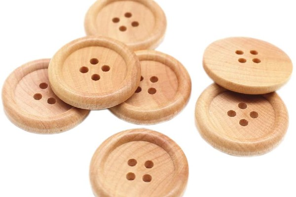

Crochet Hook

Used to make loops in yarn and interlock them into crochet stitches
Comes in different sizes
Different sizes hook allows for various sizes of crochet stitches
- Smaller sized hook allows crocheter to stitch a smaller Amigurumi toy with more details
- Bigger sized hook helps to reduce the number of stitches needed in a bigger Amigurumi toy
Comes in different sizes
Different sizes hook allows for various sizes of crochet stitches
- Smaller sized hook allows crocheter to stitch a smaller Amigurumi toy with more details
- Bigger sized hook helps to reduce the number of stitches needed in a bigger Amigurumi toy
Yarn

Used to make the body of Amigurumi Toy
Available in different colours
Comes in different materials
- Recommend wool and cotton ones for beginners (Intermediate and advanced crocheters can research more on the various types of yarn, such as acrylic and linen ones, to see which suits their current Amigurumi project the most)
Can be categorized into Single Yarns and Ply Yarns
- Single Yarns: also known as one-ply yarns, are single strands of yarn held together with a slight twist, created when they are spun
- Ply Yarns: consist of 2 or more single strand of yarns twisted together
4-ply yarns are commonly used for crocheting Amigurumi toys
Different yarn weights require different sized crochet hook
Available in different colours
Comes in different materials
- Recommend wool and cotton ones for beginners (Intermediate and advanced crocheters can research more on the various types of yarn, such as acrylic and linen ones, to see which suits their current Amigurumi project the most)
Can be categorized into Single Yarns and Ply Yarns
- Single Yarns: also known as one-ply yarns, are single strands of yarn held together with a slight twist, created when they are spun
- Ply Yarns: consist of 2 or more single strand of yarns twisted together
4-ply yarns are commonly used for crocheting Amigurumi toys
Different yarn weights require different sized crochet hook
Here's a basic guide:

Embroidery Needle

Used to sew small details or pattern on an Amigurumi toy
Can also be used to sew different body parts of an Amigurumi toy together
Large and blunt needles are recommended as 4-ply yarns are usually used to crochet Amigurumi toys
Can also be used to sew different body parts of an Amigurumi toy together
Large and blunt needles are recommended as 4-ply yarns are usually used to crochet Amigurumi toys
Toy Stuffing
To fill up the inside of an Amigurumi toy
Comes in different materials, depending on the type of effect one wants to have on their Amigurumi toy
Comes in different materials, depending on the type of effect one wants to have on their Amigurumi toy
Stitch Marker

Helps crocheter to mark their starting and ending stitch of a single round
Safety Eyes


Often used to make the eyes of an Amigurumi toy
Can be replaced by sewing the eyes using a embroidery needle and some yarns
Comes in different sizes to fit the type of Amigurumi toy made
Can be replaced by sewing the eyes using a embroidery needle and some yarns
Comes in different sizes to fit the type of Amigurumi toy made
Button


Often used for decoratiing an Amigurumi toy
Can be replaced by crocheting a button like the below picture:
Can be replaced by crocheting a button like the below picture: